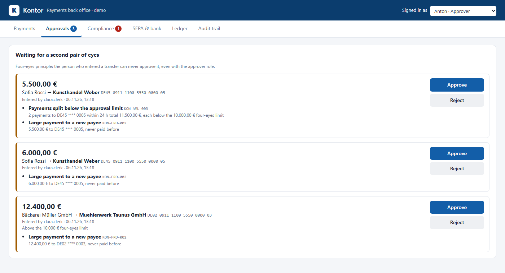

ASP.NET Core 10 · EF Core · PostgreSQL · ISO 20022 · SEPA
Kontor
A payments back office of the kind banks and fintechs run: a double-entry ledger, four-eyes approval, sanctions screening and AML rules, Verification of Payee, SEPA payment files (pain.001) and bank statement reconciliation (camt.053), with a tamper-evident audit trail. Ein Zahlungs-Backoffice, wie es Banken und Fintechs betreiben: doppelte Buchführung, Vier-Augen-Prinzip, Sanktionslisten-Screening und AML-Regeln, Empfängerüberprüfung (VoP), SEPA-Dateien (pain.001) und Abgleich der Kontoauszüge (camt.053), mit manipulationssicherem Audit-Trail.
- The person who enters a transfer can never approve it, and the attempt is logged as a security eventWer eine Überweisung erfasst, kann sie nie selbst freigeben; der Versuch wird als Security-Event protokolliert
- Catches payments split to stay below the approval limit; 20 parallel requests cannot overdraw an accountErkennt Zahlungen, die unter der Freigabegrenze gestückelt werden; 20 parallele Requests können kein Konto überziehen
- Every generated XML file is validated against the official ISO 20022 schemas in the testsJede erzeugte XML-Datei wird in den Tests gegen die offiziellen ISO-20022-Schemas validiert
- Hash-chained audit trail: a record edited in the database is found; 148 testsAudit-Trail als Hash-Kette: ein in der Datenbank geänderter Eintrag wird gefunden; 148 Tests